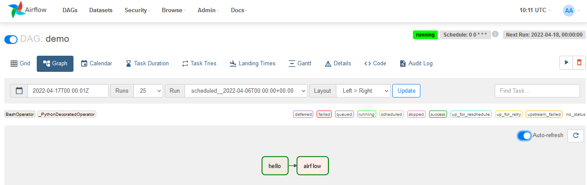
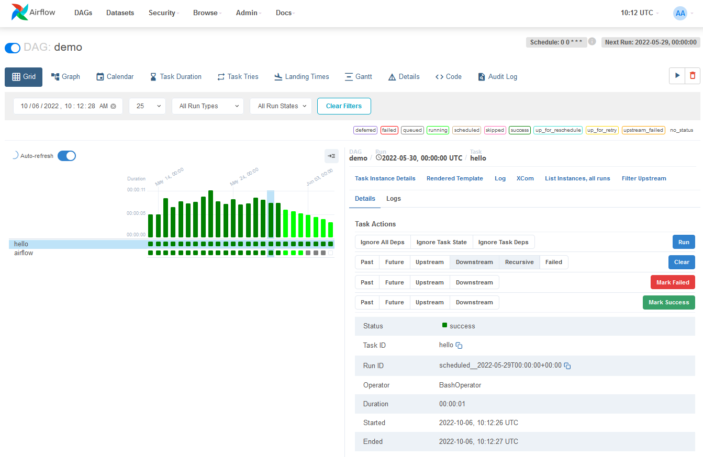

Background for context 😄
Solution consultant at
(Former) JVM Jedi
I am was not
Safety nets are essential
A batch workflow orchestration platform
from datetime import datetime
from airflow import DAG
from airflow.decorators import task
from airflow.operators.bash import BashOperator
# A DAG represents a workflow, a collection of tasks
with DAG(dag_id="demo", start_date=datetime(2022, 1, 1), schedule="0 0 * * *") as dag:
# Tasks are represented as operators
hello = BashOperator(task_id="hello", bash_command="echo hello")
@task()
def airflow():
print("airflow")
# Set dependencies between tasks
hello >> airflow()


TODO: insert image explaining the relationship between Airflow as an orchestrator managing our data pipelines and parts of our data lake.
Recapping the learnings from the past couple of years in this space
utilitiesutilitiesdef pytest_configure() -> None:
target = './unittests.db'
template = './unittests.db.template'
if not Path(target).is_file():
shutil.copy(template, target)
XCom)pytest-xdist for parallelismdag_bag_instance_key)@lru_cache()
def dag_bag(dag_bag_instance_key: Optional[str] = None) -> DagBag:
path_to_read_dags = './dags'
logging.debug(f'Fetching DagBag for config key {dag_bag_instance_key} from path {path_to_read_dags}')
return DagBag(
dag_folder=path_to_read_dags,
include_examples=False,
store_serialized_dags=False
)
with DAG(dag_id="demo", start_date=datetime(2022, 1, 1), schedule="0 0 * * *") as dag:
# DAG code here
# this code is run during DAG load
import boto3
bucket = boto3.Session().resource('s3') \
.Bucket('sample-bucket')
for bucket_object in bucket.objects.all():
print(bucket_object.key)
Over 2000 tests in less than a minute!
def pytest_configure() -> None:
target = './unittests.db'
if not Path(target).is_file():
db.resetdb(rbac=True)
TODO: add code
TODO: add code
Annoying, but can be addressed TODO: add code
TODO: add code explanation 😱
Single migration + Multiple DBs = Parallel test bliss
TODO: add code
TODO: add code to show why this will help